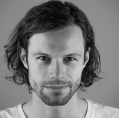

Program 2016
-
08:00 - 08:50
Registration
-
09:00 - 09:10
-
Sal 1
Intro
-
-
09:10 - 10:00
-
Sal 1
Keynote
This talk will introduce developers to Elixir and the underlying Erlang VM and show how they introduce a completely new vocabulary which shapes how developers design and build concurrent, distributed and fault-tolerant applications. The end of the talk will focus on Elixir and include some live coding.
José Valim (@josevalim) is the creator of the Elixir programming language and the Director of R&D at Plataformatec, a consultancy firm based in Brazil. He is author of Crafting Rails Applications and Programming Phoenix as well as an active member of the Open Source community.
-
-
10:00 - 10:15
Break
-
10:15 - 10:45
-
Sal 1
Moving beyond technology
A growing number of organisations and individuals are moving beyond the hype and investing in the internet of things. I will share thoughts on what business mindset they should take when investing in connected product experimentation. I’ll use examples of my work at Tinker, the first distributor of the Arduino in the UK and with clients since then.
Alexandra Deschamps-Sosino is an interaction designer, product designer, entrepreneur and speaker based in London. She was named 2nd in “Top 100 Internet of Things Thought Leaders” (Onalytica, 2014) and included in the “Top 100 Influencial Tech Women on Twitter” (Business Insider, 2014). She heads up Designswarm, a consultancy for clients who want to plan for next generation of connected products, experiences and strategies. She was co-founder and CEO of Tinker London, the first distributor of the Arduino platform in the UK. Her work has been exhibited at the Museum of Modern Art in New York, the Victoria & Albert Museum and galleries around the world.
-
Sal 2
A developer's life in Linux distroland
Having your application shipped by all the major Linux distros is great, but it can also be challenging. What are the pros and cons of being in a distro? How does it affect development speed and resources? Is it still relevant, and is it worth the trouble? In this talk, we'll examine all these questions, using MySQL as an example.
Norvald is a Trondheim-based software engineer at Oracle and a long time open source enthusiast. For the last 5 years, he's been MySQL Engineering's point of contact for package maintainers in Linux distros.
-
Sal 3
Internasjonal kommersialisering av teknologi - en lokal historie fra Trondheim med Myworkout AS
Myworkout is founded october 2013 in Trondheim. It aims to commercialize research from NTNU with technology, to solve the international inactivityproblem which according to WHO kills more people than smoking and includes 80% of the population. Myworkout currently has 15 FTEs with developers, scientists, entrepreneurs and marketers.
Knut Løkke is founder & CEO at Myworkout. He is a serial entrepreneur with international experience with the core values innovative, responsible and courageous. <br> Marius Waldum is Chief Marketing Officer & Product manager at Myworkout. He spends his days building the future of healthy living alongside his colleagues at Myworkout in Trondheim. He is an avid learner, eager to explore, and always searching for better ways to build and sell products.
-
Sal 4
An Intense Overview on the React Ecosystem

React has been named the front-end library to learn in 2016 however few people talk about the React without mentioning Flux (or Redux or Relay). In this intense talk, we will navigate through the most significant parts of the React tools and libraries. We will look at the various Flux implementations (including a short explanation of Flux) like Redux, at React-Router, at reactive database or reactive API libraries (like GraphQL, Relay and Falcor) and finally at everyday tools and techniques that make the React developer happy. By the end of this talk, you will have a greater grasp of the ecosystem and leave with new tools in your developer arsenal.
Rami Sayar is a technologist passionate about the intersection of art, design and the web. For the past 5 years, he has been experimenting with the bleeding edge of emerging technologies, determined to find use for them in everyday life. In his current role as a Senior Technical Evangelist for Microsoft Canada in Montreal, Rami covers technical areas such as open source technologies, open data, and cloud computing, as well as growth hacking and marketing. He is a frequent international speaker and has spoken at prestigious conferences such as Build, FITC, ConFoo, DroidCon, CUSEC, KWS and TEDx at HEC Montreal. Rami is prevented from sleeping by his curiosity for experimentation, his insistence on shipping high quality code and helping startups survive the grind.
-
Sal 5
Koden til mitt hjerte: Hvordan jeg hacket min personlige kritiske infrastruktur
Vår avhengighet av systemer som styres av programvare øker raskere enn vår evne til å sikre systemene. Når alle våre ”dingser” kobles på nett øker angrepsflaten og våre verdier blir sårbare for hacking. Dette utgjør ikke bare en trussel mot informasjonssikkerhet og personvern; også menneskers liv og helse trues når dingser som kan påvirke fysiske systemer i økende grad kobles opp mot Internett. Marie Moe er avhengig av et medisinsk implantat, en pacemaker som sørger for at hjertet hennes slår. Som sikkerhetsforsker ønsket hun å finne ut mer om informasjonssikkerheten i denne datamaskinen inne i sin egen kropp, men hun fikk ikke tilgang til å se koden som holder henne i live. Marie startet derfor et hacking-prosjekt for å finne ut av sikkerheten i sin egen personlige kritiske infrastruktur.
Marie Moe har en mastergrad i matematikk/kryptografi, samt en doktorgrad i informasjonssikkerhet. Marie har erfaring som seksjonsleder ved NSM NorCERT, Norges nasjonale senter for håndtering av alvorlige dataangrep. Hun jobber i dag som forsker innen informasjonssikkerhet ved SINTEF IKT, og underviser ved NTNU. På fritiden er Marie engasjert i grasrot-organisasjonen ”I Am The Cavalry”.
-
-
10:45 - 11:00
Break w/refreshments and food
-
11:00 - 11:30
-
Sal 1
Kotlin - Ready for production
Did you know that Kotlin is being used in production for over a few years now already? Both inside and outside of JetBrains there are people deploying Kotlin applications for Android platform, for Web Applications and just about any other type of application. Why are people using it instead of Java or some of the other languages out there? Primarily because it provides significant benefits in terms of conciseness, readability and safety, without some of the drawbacks that adopting a new language has such as a higher learning curve or interoperability with existing code and ecosystems. In this talk we'll cover some aspects of Kotlin that can really help you in your daily development, focusing on solving issues versus highlighting language features.
Developer and creator of many things OSS, his passions includes Web Development and Software Architecture. Has authored a couple of books, a few courses and has been speaking at industry events for nearly 15 years. Currently atJetBrains leading the Developer Advocacy team. Spends as much time as he can writing code.
-
Sal 2
Gode smidige praksiser for global utvikling
Dette er historien til DNV GL, FARA og Storebrand som har opplevd hvor vanskelig globale distribuerte prosjekter kan være, og derfor har måtte endre og tilpasse sin smidige metodikk for å løse disse utfordringene. Hvilke utfordringer har de møtt? Hvordan har de fått til selvorganisering, retrospektivere, kick-off, og innovasjon i sine virtuelle team?
Nils Brede Moe er forsker ved SINTEF IKT og er opptatt å utvikle nye forskningsbaserte metoder innen global software utvikling, innovasjon, og smidig utvikling. Han jobber for å øke konkurransekraften til norske bedrifter som tar frem software intense produkter.
-
Sal 3
Moore's law halted, and we caught fire
Since the rise of the transistor we have all banked on an endless spiral of doubling and our code sucks. As someone from the game industry where cycles matter and frames are counted Claire takes a hard look at the future of wearables and virtual reality. Why is it all terrible and it's your fault and how can we possible fix it as we move into the future of exploding batteries and past due programming. The substance of the talk is around performance, real time computing and modern bottlenecks. Tangentially how this applies to the mobile and low energy market. Taking lessons from performance critical world of games and shifting them into a broader base.
Claire is a queer geeky Creative Programmer with a passion for learning and general insanity. She works as Senior Online Consultant at Sony in London UK. When not programming, playing games, roleplaying, learning, or reading. She started in the industry as a programmer, moved into design then bounced back between the two. Spending her days consulting various Playstation projects on online design and technical points. She has shipped several titles across eight platforms. Claire has also worked on R&D projects, pitches, consulting and developing a reputation as that crazy "left field" chick who codes.
-
Sal 4
Design Talking: Lær å snakke med/som en designer på 1-2-3
UX og UI, produkt-, digital- og experience design. Service design og design thinking. Inhouse designere eller design konsulenter? Begrepene florerer, og det er nesten blitt en heltidsjobb å holde tritt med hva som er i vinden i design-verdenen. Samtidig blir det stadig mer forventet at produkter eller leveranser skal "designes" eller gå gjennom en designprosess på en eller annen måte. Så hvorfor er design blitt så viktig? Hva gjør de ulike designrollene, og hva trenger du i ditt team for å skape bedre brukeropplevelser og mer vellykkede leveranser? I denne sesjonen vil Rolf Anders si litt om dette og i tillegg fortelle i grove trekk om de viktigste fasene og prosessene en designer går gjennom for å løse problemer på en litt annen måte.
Rolf Anders har snart 10 års erfaring som fulltids designer av digitale flater, og har vært med å skape noen av Trondheims mest brukte mobil-apps. Han har en forkjærlighet for å bygge produkter som gjør hverdagen enklere, og trives godt i skjæringspunktet mellom designere og utviklere. For tiden jobber han med å bygge opp designkapasiteten i EVRY Financial Services.
-
Sal 5
Offentlig IT v2.0

Offentlig IT-prosjekter ender altfor ofte med katastrofe, og selv de som kommer i havn er pinlig dyre. Kan vi virkelig si at en IT satsning til over en milliard er en suksess? Hvor dyrt bør det egentlig være? Hvorfor blir det så dyrt? Hvorfor feiler vi så ofte? Er det inkompetanse? Ondskap? Er konsulentene for grådige? Er det manglende kompetanse hos statlige tilsatte? Feil metodikk? Feil organisering? Har vi for mange systemer? For få? Bør vi standardisere mer? Isåfall hva? Eller gjør vi rett og slett så godt som vi kan? Kan det kanskje ikke bli bedre? Jeg stiller med et utvalg diagnoser og kurer som jeg håper vil inspirere folk i offentlig sektor til å tekne nytt slik at skattepengene våre kan utnyttes mer effektivt.
Christin is an enthusiastic programmer and public speaker who started off working in the oil sector in 2000. In 2010 she began contracting for the public sector and was blown away by how inefficiently software development projects were run. She has since been actively involved in trying to change how public sector software development is organised.
-
-
11:30 - 11:45
Break
-
11:45 - 12:15
-
Sal 1
Rider Tips and Tricks
Rider is a new cross platform .NET IDE from JetBrains. In this talk we're going to spend the time seeing how you can be productive and work efficiently using the keyboard, focusing on the task at hand and not being distracted by the environment. We'll learn how to maximise the tool to adapt to our workflow as opposed to the other way round, as well as learn some hidden tips and tricks.
Developer and creator of many things OSS, his passions includes Web Development and Software Architecture. Has authored a couple of books, a few courses and has been speaking at industry events for nearly 15 years. Currently at JetBrains leading the Developer Advocacy team. Spends as much time as he can writing code.
-
Sal 2
Safe continuous delivery in a large scale stateful multi tentant system
Running a large scale cloud service for multiple tenants reveals some real challenges such as stale test data, long execution time, manual procedures that might be executed incorrectly. To address these issues we have created a state-of-the-art system with a continuous build pipeline per tenant, with automatic generation of test input data based on real usage.
I am a backend engineer in Yahoo that like systems that have good test coverage, easy to deploy, transparent, and that solve hard problems.
-
Sal 3
JUnit 5 : Next Generation Testing on the JVM
Java’s most ubiquitous library is getting an update! And this is the time to see what’s new and weigh in on its course. This talk will: show you how to write tests with JUnit 5; walk you through the changes compared to JUnit 4; present the new architecture; discuss compatibility with previous JUnit versions, IDEs, and other testing tools. Be careful, though: You might end up with an urge to start using it right away.
Nicolai is a thirty year old boy, as the narrator would put it, who has found his passion in software development. He constantly reads, thinks, and writes about it, and codes for a living as well as for fun. He works as at Disy, Germany’s leading provider for spatial and environmental IT-solutions, where he improves the flagship product. He started blogging in September 2014 and is a long-tail contributor to several open source projects.
-
Sal 4
Designfriksjon
"Produktet skal kunne kjøpes med max to klikk", "Skjemaet skal være superenkel, ha færrest mulig felter og kan fylles ut raskest mulig", Dette er krav som vi alle har møtt på, og kanskje til og med stilt selv. Foredraget handler om hvorfor vi i noen situasjoner må gjøre en brukeroppgave vanskeligere å gjennomføre, for en bedre brukeropplevelse.
Songying har jobbet som interaksjonsdesigner siden 2011, og elsker å forenkle kompliserte løsninger og prosesser. I løpet av årene har hun erfart at du faktisk kan gjøre løsningene dine for enkle å bruke.
-
Sal 5
Forskning på utviklere
People often discuss the number of heads or resources that are needed for a development project. Unfortunately, developers are not equal in their capacity to produce software. This presentation discusses competence in software development and the mistakes companies make about evaluating it.
Gunnar Bergersen is an associate professor at the University of Oslo, where he does research on software developers. He also works with more authentic ways to assess developer skills as the CEO of the start-up company Technebies. Gunnar is a below-average developer who used to think he was quite good at programming.
-
-
12:15 - 13:15
LUNCH
-
13:15 - 14:00
-
Sal 1
Keynote

Andreas Wahl kommer til Trondheim for å nerde med oss gjennom konferansen. Underholdende fakta og fysikk
Andreas is a physicist, science communicator, tv host and Norwegian champion of cherry stone spitting. He has hosted numerous Norwegian tv shows, among others two seasons of "Folkeopplysningen" (unofficial translation: "Enlightenment of people"), "Med livet som innsats" ("Life on the line") and Norwegian children's tv. Andreas regularly have science shows all over Norway and in the spring of 2016 he toured the country with his spectacular show "Elektrisk" ("Electric").
-
-
14:00 - 14:15
Break
-
14:15 - 14:45
-
Sal 1
More Than A Pastime: A Promise to Future Generations
Most people today will tell you about how we build software, but at times we get so caught up in the question of how, we forget to ask why. In his talk James Portnow will look at why we build games and why we care about them. He will ask what more we can do with them and what it is about them that makes them effect us so much. And, in the end, he will ask you to do more than simply build, he will ask you to create.
Best known for writing the web series Extra Credits, James Portnow is a game designer and consultant known for his theories on socially positive design. He received his Masters from Carnegie Mellon’s Entertainment Technology Center, went on to work for Activision as a designer on the Call of Duty series before raising funds to start his own company, Divide by Zero Games. He currently serves as the CEO of Rainmaker Games, a design and consulting firm that has worked with partners from Zynga to Riot Games, in addition to writing the popular Extra Credits and Extra History series.
-
Sal 2
Live updates med SignalR, React og Redux
Vi ser på hvordan SignalR og React/Redux gjør det lekende lett å dele tilstand på tvers av brukere og nettlesere. Med en dose funksjonell programmering og en anelse web sockets kan dine brukere bli kontinuerlig servert ferske oppdateringer, uten komplisert og uhåndterlig logikk.
Full stack utvikler med svakhet for korte feedback loops, syntaktisk sukker og lakris. Trives best med å løse vanskelige oppgaver på kule måter, enten det gjelder ASP.NET, JavaScript eller native mobilapps.
-
Sal 3
What it takes to run an IoT business
This session is a practical talk about the practicalities of starting a connected design business and will give any budding entrepreneur in this space the tools and references to plan their company’s early years.
Alexandra Deschamps-Sosino is an interaction designer, product designer, entrepreneur and speaker based in London. She was named 2nd in “Top 100 Internet of Things Thought Leaders” (Onalytica, 2014) and included in the “Top 100 Influencial Tech Women on Twitter” (Business Insider, 2014). She heads up Designswarm, a consultancy for clients who want to plan for next generation of connected products, experiences and strategies. She was co-founder and CEO of Tinker London, the first distributor of the Arduino platform in the UK. Her work has been exhibited at the Museum of Modern Art in New York, the Victoria & Albert Museum and galleries around the world.
-
Sal 4
En historie om enere og nuller
13 november 2000. Jeg sitter alene på en restaurant i London å feirer min 24 års dag. Den eneste jeg snakket med var den eldre italiensk kelneren som jobbet der. Han ga meg husets bursdagsdessert med stjerneskudd. Da hadde jeg nådd bunnen. Dette er en historie om det å være en ener og det å være et null. En historie om å fjerne tabuer og hvordan det kan gjøre oss alle bedre. En historie om utbrenthet, heltedyrking og om det å jobbe som programmerer.
Espen Dalløkken, 39 år gammel programmerer fra Oslo. Jobber med webutvikling og NodeJS. Hjelpetrener for Røa gutter 2009. Organisator av Web Rebels konferansen. Chat robot for Oslo NodeJS meetup. Har teamet opp med Fantorangen for å lage nrksuper.no.
-
Sal 5
Hvordan kan vi gjøre nyheter til et spill?
I dag kan vi drukne i informasjon hvis vi vil. Samtidig er det mye kunnskap og nyheter om byen og landsdelen vi bor i som går under radaren til mange i Trøndelag. Kan vi lære av gaming og spillteknologi for å gjøre det å være godt oppdatert morsommere og viktigere i hverdagen?
Utviklingsredaktør i Adresseavisen. Opptatt av å bruke teknologi til å sikre et godt informert og fungerende samfunn. Vet hvor håndkleet mitt er.
-
-
14:45 - 15:00
Break
-
15:00 - 15:30
-
Sal 1
Phoenix a web framework for the new web
Web developers have typically been presented with a choice between performance or a productive development environment. With Phoenix, developers can have both while enjoying a wonderful set of abstractions for working with the new web, making streaming data to browsers, native mobile application or embedded clients a breeze. Finally, we will see how Phoenix leverages the Elixir language and the Erlang VM for writing maintainable and scalable code.
José Valim (@josevalim) is the creator of the Elixir programming language and the Director of R&D at Plataformatec, a consultancy firm based in Brazil. He is author of Crafting Rails Applications and Programming Phoenix as well as an active member of the Open Source community.
-
Sal 2
Breaking the Fourth Wall with JavaScript
The dawn of ES201* is around us, no doubt. But many are focusing more on the superficial changes to JavaScript, and not on the more interesting semantic changes. Like JavaScript Proxy. Now we can do more metaprogramming than ever. What does this mean and what can we do with that? In this presentation we’ll see how we can do more metaprogramming and how we can use some of it’s properties to do fun, and sometimes stupid, implementations.
Mikael Brevik is a programmer. While he enjoys many other languages, he usually falls back to his real love; JavaScript. He likes to contribute to open source, and maintains a couple of popular JavaScript-libraries in his spare time. When he is not programming he organizes a JavaScript meetup in Trondheim and hosts a budding Norwegian JavaScript podcast.
-
Sal 3
More Than A Pastime: A Promise to Future Generations, Q&A
(Q&A) Most people today will tell you about how we build software, but at times we get so caught up in the question of how, we forget to ask why. In his talk James Portnow will look at why we build games and why we care about them. He will ask what more we can do with them and what it is about them that makes them effect us so much. And, in the end, he will ask you to do more than simply build, he will ask you to create.
Best known for writing the web series Extra Credits, James Portnow is a game designer and consultant known for his theories on socially positive design. He received his Masters from Carnegie Mellon’s Entertainment Technology Center, went on to work for Activision as a designer on the Call of Duty series before raising funds to start his own company, Divide by Zero Games. He currently serves as the CEO of Rainmaker Games, a design and consulting firm that has worked with partners from Zynga to Riot Games, in addition to writing the popular Extra Credits and Extra History series.
-
Sal 4
From Big Data to Big Design - Why Design is a back-end thing
A Developer-come-Designer, Truls has returned to tell tales from the other side. There he found a mindset with immense potential - too powerful to be confined to interface usability and aesthetics. Architects, DBAs, back-end and front-end developers alike, we can all be more like designers! It’s time to zoom out and look at what we do and how it fits in the bigger picture.
Truls worked 7 years in finance IT, working with large data warehouses before he lead a department of skilled core system DevOps in Trondheim. But one fateful evening, playing mass effect 2, Truls discovered something that eventually lead to him quitting his job in 2014 to study Design…
-
Sal 5
Sensitive data i skyen? Det går ikke an!
"Ønsker du å bruke skytjenester, men kan ikke siden dataene dine er sensitive? Dette er en utfordring mange møter, men sannheten er at sensitive data godt kan leve i skyen. Du må bare sikre tjenesten skikkelig.
Har programmert siden barndommen og planlegger å fortsette med det! Nerd og stolt over det :-)
-
-
15:30 - 15:45
Break w/refreshments and food
-
15:45 - 16:15
-
Sal 1
Where did you find that..

Every wonder how people find vulnerabilities or things to attack. Well wonder no more. In this talk Niall will give you the VIP guided tour of the internet’s best places for finding this information. On this adventure Niall will show you how to use Google like both a hammer and a scalpel on your website, discover security misconfigurations ranging from “Seriously?” to “What were they thinking???” and other fun things.
Niall is an Irish guy who managed to end up in Norway after finding out the country existed when he was in New Zealand. He works for Capgemini in Stavanger as a managing consultant, and is also a Microsoft ASP.NET MVP, Friend Of RedGate and general rugby nut (which means he shouts a lot). He has a passion for web technologies, security and whiskey which can lead to some interesting discussions.
-
Sal 2
Funksjonell reactiv programmering med RX Java for Android
RxJava er det nye «kule» innen Android-utvikling. Det er et bibliotek for å skrive asynkrone og hendelsesbaserte programmer ved hjelp av observerbare sekvenser, med andre ord Funksjonell Reaktiv programmering. Abstraher bort ting som lavnivå threading, synkronisering, trådsikkerhet og parallelle datastrukturer. Teori og praksis blir vinklet mot Android-utvikling.
Jeg studerer kunstig intelligens og maskinlæring ved NTNU. Jeg er med i en Trondheimsbasert startup kalt Grabster, hvor jeg har ansvaret for Android-utvikling. Jeg har også jobbet for Zedge på deltid og Microsoft som summer intern. Jeg har stor interesse for mobil utvikling og UI/UX.
-
Sal 3
GraphQL > REST API?
I starten av 2015 viste Facebook fram hvordan de har løst noen av problemene med REST API-er - blant annet mange kall mellom klient og server for kompliserte datastrukturer og henting av datafelter man kanskje ikke trenger. De har utviklet en ny måte å utveksle data mellom klient og server - nemlig med noe som kalles GraphQL. Hva er det? Hvordan fungerer det? Hvilke problemer løser det?
Utvikler i Iterate. Veldig interessert i tech. Liker å holde meg oppdatert, særlig på frontend og JavaScript.
-
Sal 4
High performance sexiness
Design av ekspertsystemer for high performance er noe ganske annet enn å designe forbrukerapps for markedsføring og underholdning. I dette foredraget går vi grunding til verks for å finne ut hvorfor ekspertsystemer ofte er dørgende trist og trasig, og vi legger frem vår tilnærming til High Performance Sexiness - krydret med eksempler og erfaringer.
Creative Leader i EGGS Design. Allsidig, kreativ og engasjert. Brenner for magiske brukeropplevelser. Småbarnspappa og skaptrønder.
-
Sal 5
Hvordan lages globale storskala skytjenester?
Hva skal til for å lage en skytjeneste som håndterer milliarder av forespørsler om dagen og petabytes med data i datasentre over hele verden som aldri kan være nede? I Trondheim sitter det et lite team som gjør dette for Yahoo. Jeg vil snakke om hvilke generelle problemer som oppstår med slike systemer rundt tilgjengelighet, kontinuerlig levering, operasjonell automatisering og så videre, og se på hva som kan løses med standard verktøy som Docker, Chef og AWS og hva vi tror det er best å gjøre selv.
Jon Bratseth is the architect of Vespa. He has worked on platforms for low latency computation over large data sets for the last 15 years.
-
-
16:15 - 16:30
Break
-
16:30 - 17:00
-
Sal 1
A digital entertainment browser – sharing our thoughts of building a post–App era
The web is evolving into a world of services easily accessible for coders. It has become almost trivial to get access to huge compute and network resources, machine learning algorithm, sentiment analysis, natural language interpreters, people´s social networks and what not. Making a system that would require relatively large and skilled organizations just a few years ago is relatively easy through open / commercially available APIs. In the midst of this paradigme ParrotPlay is launching a dedicated browser, in lack of a better classification, for digital entertainment. We want to share our thoughts and strategies for building a product/service in a post-App era, and touch upon some of the challenges we are facing from a UX / business perspective.
CEO and Co-founder of ParrotPlay - the world´s first browser for digital entertainment. Have been around the block a few times with Falanx Microsystems, ARM and FXI Technologies amongst other companies. Passionate about new technology and love the adventure of bringing ideas to life (or horrible deaths).
-
Sal 2
Elm: språket som gjør deg til en bedre utvikler
Det er fullt mulig å skrive god, lesbar og sikker JavaScript-kode for frontend-applikasjonen din. Det er også fullt mulig å la være. I dette foredraget viser jeg hvordan Elm hjelper deg å unngå de vanlige feilene, og underviser deg underveis. Med Elms "no runtime exceptions"-compiler, gode feilmeldinger og oversiktlige tilstandshåndtering ender vi opp med kode som er robust, intuitiv og lettlest.
Oslo-basert vestlending med en forkjærlighet for musikk og generelt nerderi. Jeg jobber som utvikler i Iterate, der mitt siste oppdrag var digitalisering og frontend-utvikling for Gjensidige.
-
Sal 3
Putting it all back together using VSCode, VSTS + Azure Service Fabric
Now that we are truly diversified - JavaScript runs on everything, including your toaster. .NET has been ported to just about everything as well and made open-source. Java has been delivering on this same promise for years. Where does that leave us from a tooling perspective, deployment model and more importantly; process. The talk will concretely show how Visual Studio Code can help you go across the different platforms, target different platforms and show how you can pull it all together in VSTS and the new release management bits to really deliver on the DevOps philosophy. Key topic in this talk is also feedback-loop.. How can we keep it as tight as possible throughout the lifecycle of development and delivering.
Koding er for meg en livsstil - noe kone og barn er smertelig klar over. Jeg har kodet siden jeg fikk min første datamaskin i tidlig alder - men profesjonelt siden 1994 med alt fra spillutvikling på ulike plattformer til forretningskritiske løsninger de siste 15 årene fra små til store systemer. Kryss-plattform er en lidenskap som jeg har hatt i alle år - stolt eier av både Amiga og Atari ST i sin tid :). Dette henger igjen den dag i dag og er noe jeg brenner for sammen med open source, kodekvalitet og det å lage vedlikeholdbare løsninger. Har utviklet flere open source løsninger selv og bidratt til flere kjente også.
-
Design i IT – make it or break it
Alle vil ha design! Leder du designere, eller er designer selv? Da er du med på å bestemme om dette er starten på en gullalder, eller starten på slutten. Ingrid snakker om hva som skal til for å lykkes med design i IT-bransjen, og hvordan ansettelse og organisering av designere påvirker kvaliteten på det som leveres.
Ingrid er interaksjonsdesigner og fagleder for brukeropplevelse i BEKK, og sitter i styret for IXDA Trondheim. Hun har også sterke meninger, runde briller, og dårlig humor.
-
Sal 5
Hvordan vi portet Race Day til Unity
Spillet Race Day er laget av Bertheussen IT i Trondheim. Det har over fem millioner nedlastinger for Android og iOS. Dette er historien om hvorfor og hvordan vi reimplementerte appen i spillmotoren Unity. Unity er verdens mest brukte spillmotor. Du får se litt av C#-koden vår, hvordan vi bruker Unitys 2D fysikkmotor, og hvordan vi får dette til å virke bra på både nye og gamle iOS- og Android-telefoner.
Eirik Wahl er konsulent i Itema, og er mer enn gjennomsnittlig opptatt av 3D-grafikk, Virtual Reality og annen fancy teknologi. Han har jobbet som systemutvikler siden 2001. Siden slutten av 2015 har han jobbet med Bertheussen IT for å videreutvikle spillene Race Day og Wordfeud.
-
-
17:00 - 17:15
Break
-
17:15 - 18:05
-
Sal 1
Rise of the digital nervous system
Humanity have always been intricately entangled with our technology. Now the border between the physical and the digital is beginning to dissolve completely. Are the machines taking over, or did they already do that centuries ago? What does this mean for our corporations, our governments, and our beliefs about the world?
Gustaf Josefsson is a ’voice of a generation’. He does not only speak about, but live and breathe the future. He is a maker and a creator.
-
-
18:05 - 18:15
-
Sal 1
Outro
-
-
18:15 - 23:00
TDC after party